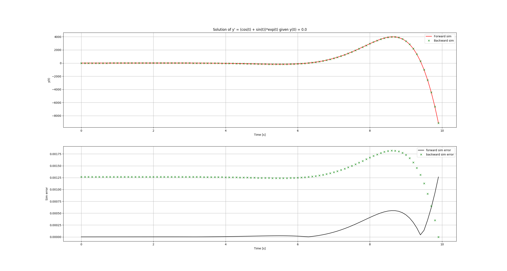

Numerical Integration
Numerical Integration
The model ODE
The first order ODE: \[ \frac{dy}{dt} = f(t, y) \] where \(y \in R^N\). It is interesting because high order ODEs can be written in form of a system of first order ODEs.
Euler method
- forward Euler: \[ y_{k+1} = y_{k} + \Delta T f(y(k)) \]
- backward Euler: \[ y_{k+1} = y_k + \Delta T f(y(k+1)) \]
The forward Euler is also called explicit method because you can evaluate the next time step by an explicit equation. It is simple but less stable.
The backward Euler is also called implicit method because you have to solve nonlinear equations to get the next step. It is more complicate by more stable 1.
Runge-Kutta methods
The Runge-Katta methods are the most popular methods of solving ODE numerically. They can be derived for any order of accuracy. The most popular method is the fourth order Runge-Kutta method, or RK4 method, which is given by
\begin{eqnarray} y_{k+1} &=& y_k + \frac{1}{6} (k_1 + 2K_2 + 2K_3 + k_4), \\ k_1 &=& h f(t_k, y_k) \\ k_2 &=& h f(t_k + \frac{h}{2}, y_k + \frac{1}{2} k_1) \\ K_3 &=& h f(t_k + \frac{h}{2}, y_k + \frac{1}{2} k_2) \\ k_4 &=& h f(t_k + h, y_k + k_3) \end{eqnarray}Quadrature
Quadrature is more or less a a synonym for numerical integration, especially as applied to one-dimensional integrals. Some authors refer to numerical integration over more than one dimension as cubature; others take quadrature to include higher-dimensional integration.
\[ \int_a^b f(y) dt \approx \sum_{i=1}^N w_i f(t_i) \] where \(w_i\) are the quadrature weights and \(t_i\) are the quadrature points or nodes.
An interpolatory quadrature formula can be created for arbitrary support points by approximating the integrand by Lagrange polynomials, so that \[ \int_a^b f(y) dt \approx \int_{a}^b \sum_{i=1}^N L_i(t) \cdot f(t_i) dt \]
The quadrature weights can be easily determined as \[ w_i = \int_a^b L_i(t) dt \]
The quadrature formula with the maximum degree of precision is the Gauss quadrature formula, which is exact for polynomials of degree \(2N - 1\) or less. The Gauss formula is found by choosing the weights \(w_i\) and points \(t_i\) which make the formula exact for the highest degree polynomial possible. The points and weights are determined so that \[ \int_{-1}^{1} f(t) dt = \sum_{i=1}^N w_i \cdot f(t_i) + E_N \] and the error \(E_N\) is zero for a polynomial of degree \(2N-1\). The Gauss points are determined as the zeros of the \(N^{th}\) degree Legendre polynomial and the weights are the integrals of the resulting Lagrange interpolating polynomials, so that \[ w_i = \int_{-1}^{1} \prod_{k=1, k \ne i}^{N} \frac{t-t_k}{t_i - t_k} dt,\ i =1, \ldots, N \]
There are other types of quadrature formula, such LGL, which is similar to the Gauss formula, except the boundary points are fixed at -1 and 1.
The error in the pesudospectral integration at the \(i^{th}\) point is bounded by \[ \|E_i\| \le \| \frac{d^N f(\xi)}{dt^N}\| \frac{2}{N!}, \ \xi \in [-1,1] \] and the pseudospectral integral will converge for any \(f(t)\) whose derivatives are bounded, as the number of nodes used approaches infinity 2.
Solve ODEs backwards in time
Having a dynamics equation, it seems normal to integrate forward to get the time history. Backward ODE sounds odd because how can you integrate a dynamic system backward in time. But actually, it is still normal in math. We can still use Runge-Kutta to integrate ODEs backward in time using a negative time step!
\begin{eqnarray} y_{k-1} &=& y_k + \frac{1}{6} (k_1 + 2K_2 + 2K_3 + k_4), \\ k_1 &=& h f(t_k, y_k) \\ k_2 &=& h f(t_k - \frac{h}{2}, y_k - \frac{1}{2} k_1) \\ K_3 &=& h f(t_k - \frac{h}{2}, y_k - \frac{1}{2} k_2) \\ k_4 &=& h f(t_k - h, y_k - k_3) \end{eqnarray}
Lagrange interpolation
Given \(N\) arbitrary support points of the function \(f(t)\), on interval \(t \in [a,b]\), there exists a unique polynomial P(t), of degree N-1 so that \[ P(t_i) = f_i, i = 1, \ldots, N \]
The unique polynomial can be found using Lagrange interpolation formula so that \[ P(t) = \sum_{i=1}^{N} f_i L_i(t) \] where \(L_i(t)\) are the Lagrange interpolation polynomials \[ L_i(t) = \prod_{k=1, k \ne i}^{N} \frac{t-t_k}{t_i - t_k} dt,\ i =1, \ldots, N \]
Spectral method for ODE and PDE
- Galerkin, tau method
- Pseudospectral method, or collocation method satisfy boundary constraints and collocation points
Direct transcription
Take the state and the control at collocation points as optimization variables
Euler method
Runge-Kutta method
Lagrange Pseudospectral method
it is outlined as:
- Lagrange interpolation + Gauss quadrature
- the state and control are interpolated using Lagrange interpolation at N LGL points
- the dynamics constraints are enforced at the LGL points
- boundary constraints are enforced using the boundary points of approximating polynomial
- the integration in the cost function is discretized using GL quadrature rule
problems:
- the cost is evaluated only at the collocation points, which in general is sparse. It may miss some important details in the cost functions. more details here
Gauss Pseudospectral method
outlined as:
- convert to Bolza formulation use Lagrange interpolation + Gauss quadrature
- integration approximation matrix
Footnotes:
A Gauss Pseudospectral Transcription for Optimal Control by David Benson, MIT, 2005